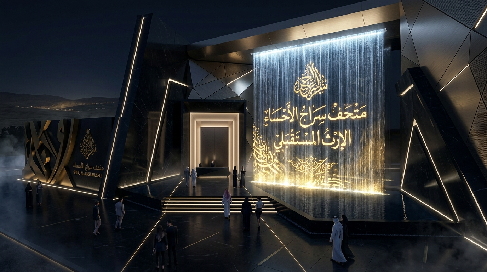

الستوري بورد البصري: معايشة رحلة الحواس السبعة
رؤية بصرية وسينمائية متكاملة تستعرض كواليس التجربة الشعورية والهندسية لمشروع «سراج الأحساء». هنا نأخذك في جولة سينمائية متسلسلة توثق ماذا يرى ويسمع ويشعر به الزائر في كل محطة، وصولاً إلى أدق التفاصيل التقنية والميزانية التنفيذية.
المخطط التفاعلي لمسار الحواس السبعة (خريطة التدفق)
انقر على أي محطة بالخريطة للتنقل السريع واستعراض مشهدها البصري ومواصفاتها الهندسية والمالية
الستوري بورد ومواصفات المحطات السبع
استعراض شامل يجمع بين السرد التاريخي والروحي، التجهيزات الهندسية، والميزانيات التقديرية لكل محطة في المعرض
ساحة الوصول والتهيئة الاستراتيجية
بوابة الماء والضوء: أولى خطوات العبور من الحاضر إلى عمق هجر

ساحة الوصول وشلال الليزر الذكي
أبرز معالم ونقاط الإبهار في هذا المشهد:
المحطات التاريخية للأحساء
تتبع تجربة الزائر تسلسلًا تاريخيًا مركزًا على الأحساء، بحيث تمثل كل محطة فصلًا من قصة المكان ودوره في شرق الجزيرة العربية وصدر الإسلام.
هجر قبل الإسلام
التعريف بهجر بوصفها حاضرة رئيسية في شرق الجزيرة العربية، مع عرض سكان المنطقة، ومسمياتها التاريخية، وحدودها، وارتباطها بالبحرين التاريخية وأوال وقطر والخط.
الواحة والطرق والأسواق
عرض أثر العيون والنخيل والزراعة في نشوء الاستقرار، ودور الأسواق والقوافل والموانئ التاريخية، وحصن المشقر وميناء العقير في حركة التجارة والاتصال الحضاري.
الأحساء في السيرة النبوية
إبراز حضور هجر ومنتجاتها وأسمائها في الروايات والمرويات المرتبطة بالعهد النبوي، مثل قلال هجر، والبرني، والثوب الظهراني، والدباء والحنتم، ضمن سياق علمي موثق.
رسالة النبوة إلى البحرين
تجسيد وصول رسالة النبي ﷺ إلى المنذر بن ساوى، والتعريف بالوضع السياسي والديني للمنطقة، وكيف دخل أهلها في الإسلام وما ترتب على ذلك من تحول تاريخي.
وفد عبد القيس وجواثى
رواية رحلة وفد عبد القيس إلى المدينة ولقائهم بالنبي ﷺ، وما حملوه من تعاليم إلى قومهم، مع إبراز مسجد جواثى ومكانته في التاريخ الإسلامي.
الثبات في عهد أبي بكر
عرض موقف الجارود العبدي وثبات أهل المنطقة على الإسلام، وأحداث الردة والحصار في جواثى، ودور العلاء بن الحضرمي في إعادة الاستقرار.
الأحساء في عهد الخلفاء الراشدين
تتبع دور المنطقة في عهد عمر وعثمان وعلي رضي الله عنهم، بما يشمل الإدارة، وبيت المال، والحركة البحرية، ودارين، والفتوحات التي ارتبطت بشرق الجزيرة العربية.
إرث الأحساء المستمر
ربط الأحداث التاريخية بالمواقع والشواهد والذاكرة المحلية اليوم، وإظهار استمرار أثر جواثى وهجر والعقير والواحة في هوية الأحساء الثقافية والوطنية.
انتقل إلى الدراسة الشاملة وغرفة إنجاز PDR
استكشف تفاصيل المحاور الثلاثة: المتحف الدائم، عرض الهولوجرام، وتجربة الـ 4D VR مع الحوكمة، المتجر، وجداول الميزانية المعتمدة.